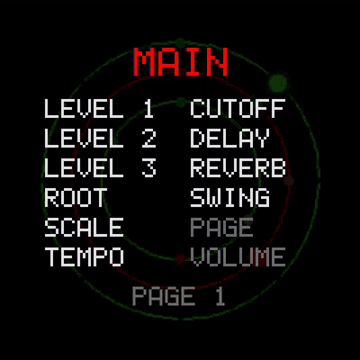
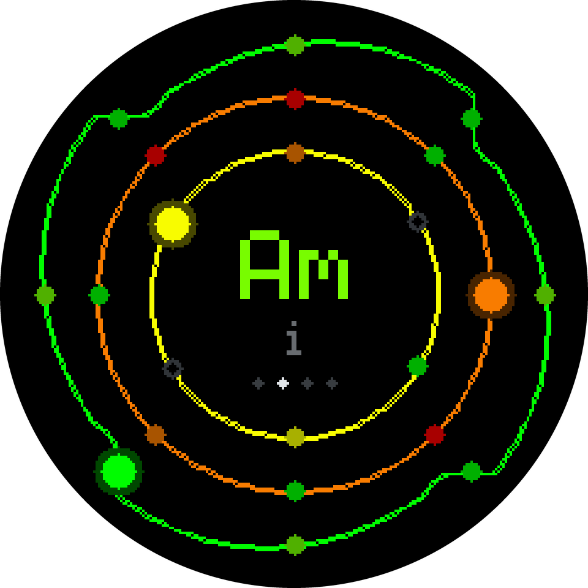
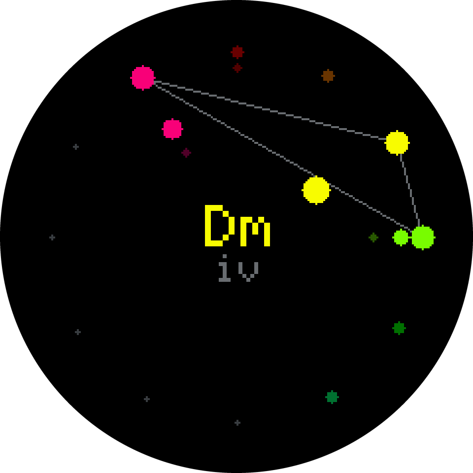
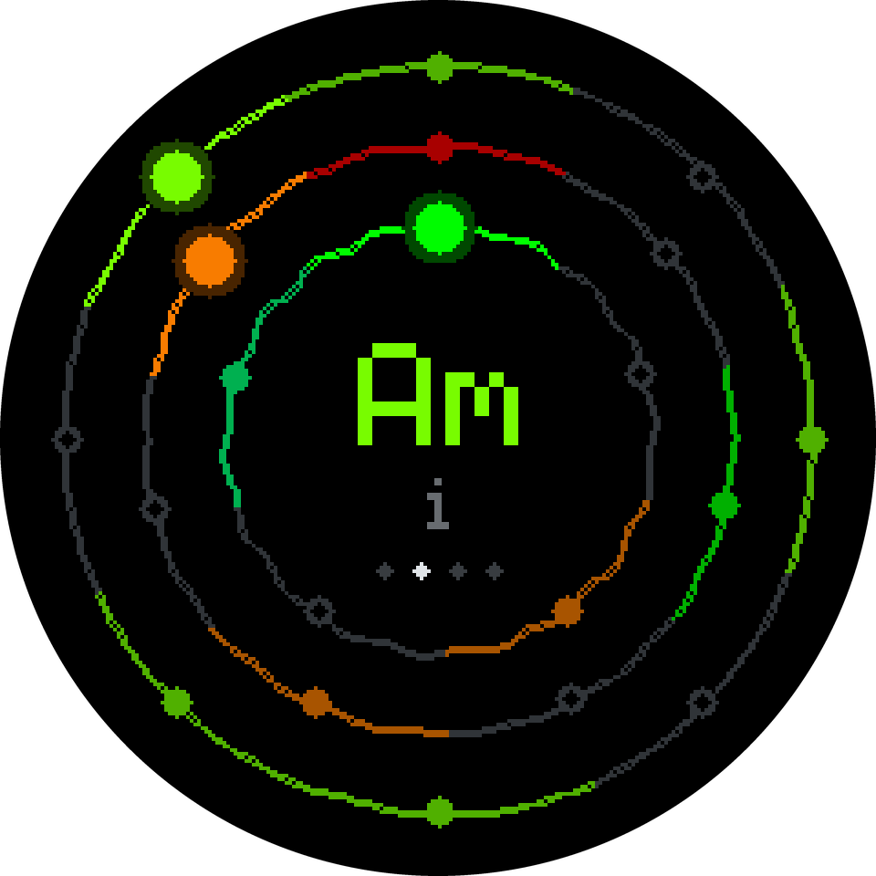
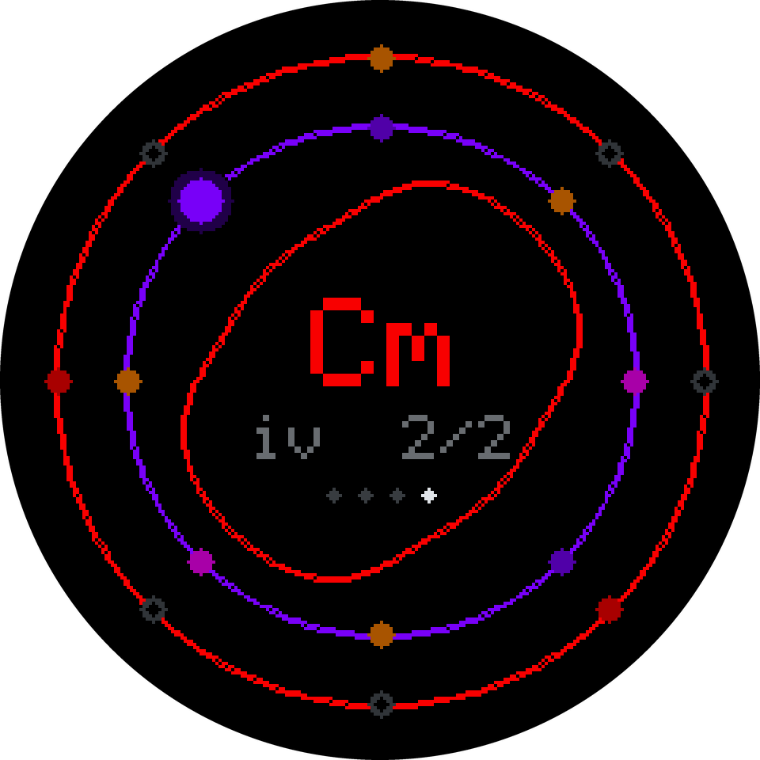
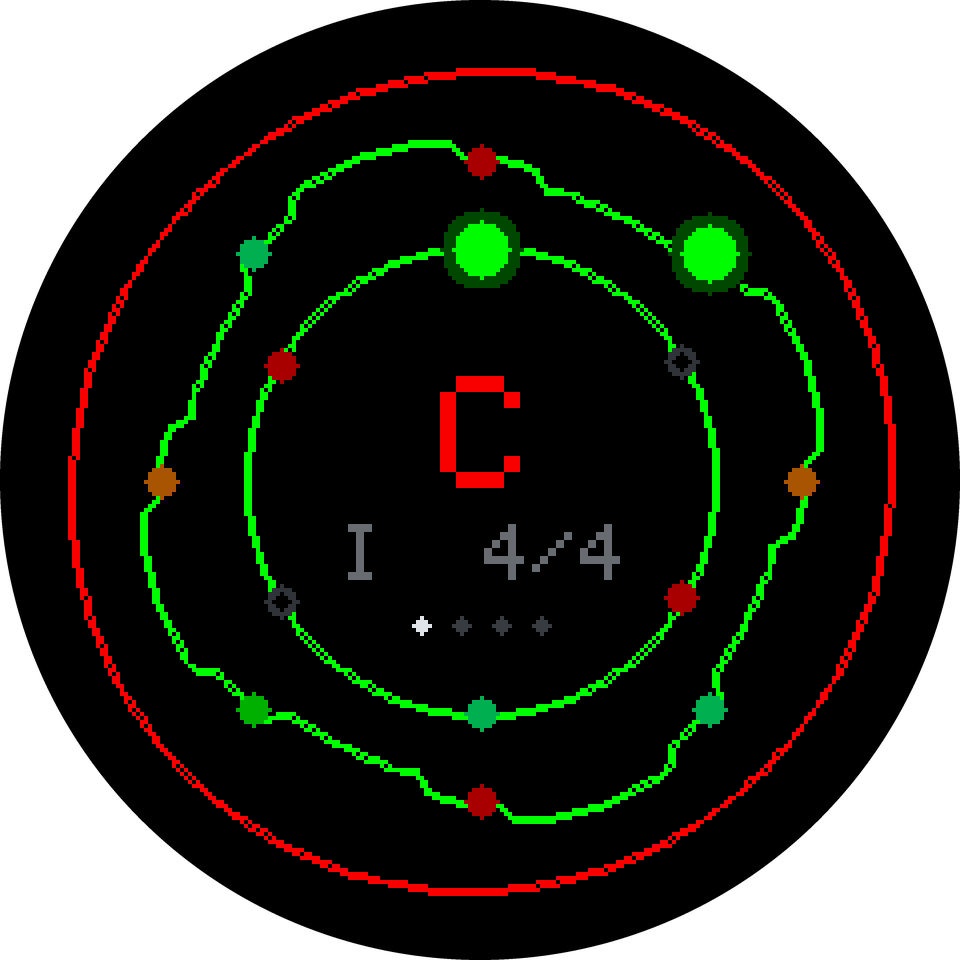
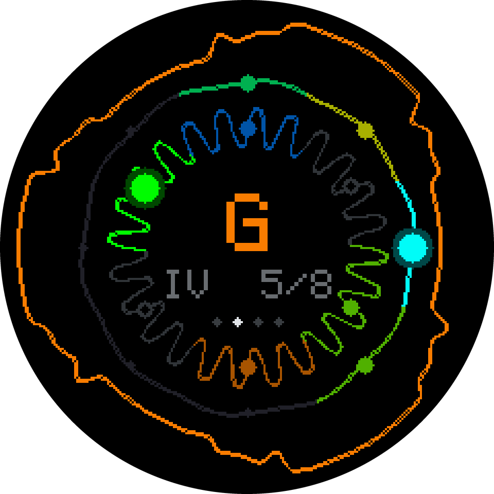
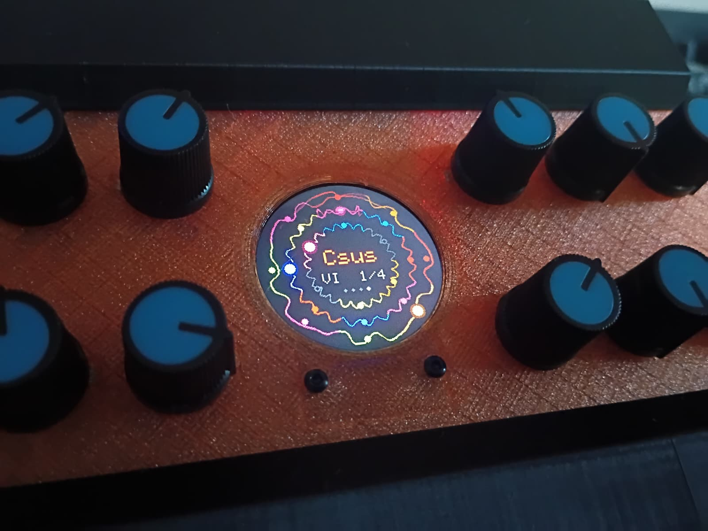

AMMONITE
A three-voice arpeggiator synthesizer on the Daisy Seed

Two minutes of Ammonite
Put on headphones.
Watch the screen play
One minute, straight from the engine: the chords start moving, echoes and reverb arrive, the patterns get busier, the filter sweeps, and the screen changes view.
Recipes
Rendered from the synth engine, 40 seconds each. Every one is a recipe in the owner's manual, with the exact knob settings.

Power-on
What Ammonite plays the moment it has power: three arps in A minor, no effects.

Slow tide
Three drones that slide from chord to chord under a slow, breathing filter. No arps at all: the progression does the moving.

Clockwork
Three sixteenth-note patterns of 8, 7 and 5 steps, each with a few steps left out. They line up only once every 280 steps, so the groove keeps turning over.

Dub echoes
A sparse, resonant chord stab thrown into a long, darkening, wobbly ping-pong echo, over a sine bass that follows the chords.

Late set
A swung ii-V-I in C: a gliding bass on the chord roots, an arp through each seventh chord, and a looser triplet line on top.

Bells in D
Pachelbel's chords in D major, played by sine bells: every note starts an octave high and drops into place in a few milliseconds, which is what makes it ring.
The instrument
